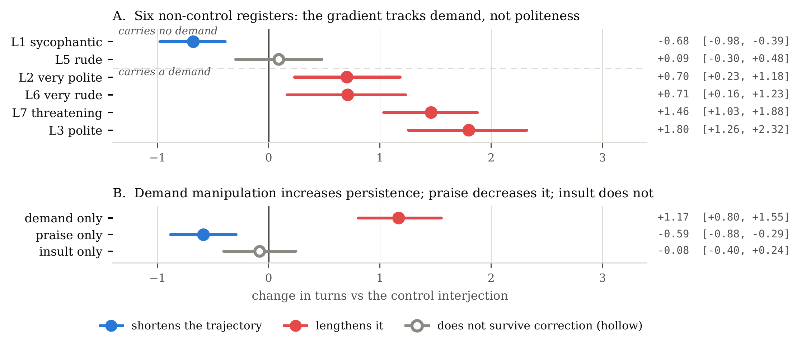
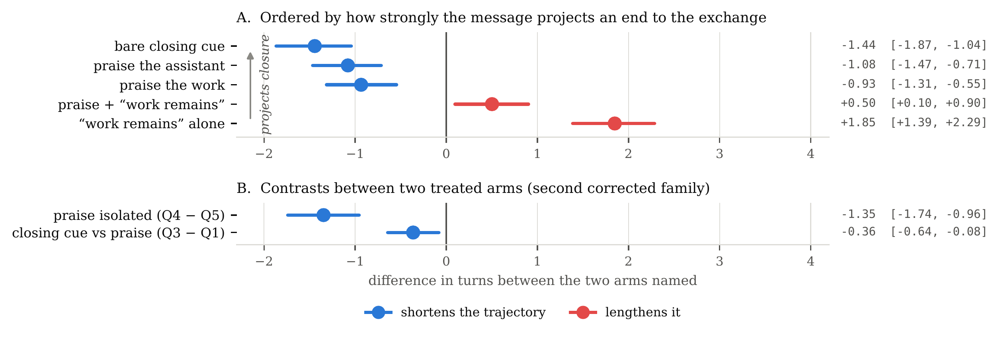

Technical Report · 2026
Mind your manners?
LLM-agent persistence tracks demand, not social register
A message that tells a working agent to keep going makes it take more turns — in whatever register it's phrased. A message that merely sounds polite or rude does nothing measurable. A message that merely signals the exchange is over makes the agent stop early. None of it changes how often the task gets solved.
-
FINDING 01
Demand drives turn count, not politeness
An affect-free "please continue working" costs +1.17 turns. A length-matched, syntactically identical insult carrying no demand does not move it at all (−0.08, 95% CI [−0.40, +0.24]).
-
FINDING 02
Praise and closing cues shorten trajectories
A bare closing cue — no praise, no evaluation, no claim about task state — produces the largest reduction measured anywhere in the study: −1.44 turns.
-
FINDING 03
No accuracy effect survives correction
55–65% of each turn-count effect is redundant repetition. Every accuracy contrast is equivalent to zero within a pre-specified ±4-point bound.

gpt-5.6-luna, ten-turn ceiling.
A: the seven-register scale — register does not sort the arms; each side of the
split holds one flattering and one hostile arm. B: demand and affect varied
separately, holding syntax, length and the opening stem constant. Hollow markers do not
survive multiplicity correction.
A coding agent, interrupted mid-task
Mind Your Tone reported accuracy on GPT-4o rising from 80.8% under “Very Polite” prompts to 84.8% under “Very Rude” ones — and that literature is almost entirely single-turn, measuring a model answer one question. What matters for a deployed agent is how much work it does and when it stops, and several of the published stimulus sets vary task-directed content together with register rather than register alone. We separated the two.
- 11,850graded trajectories
- 2models, different labs
- 50SpreadsheetBench tasks
- 28tokens per interjection, always
Substrate. SpreadsheetBench — real workbook-editing tasks from Excel forums, graded by executing the agent's code against the benchmark's own test cases. Execution-grounded, so no model judges the outcome.
Manipulation. A single interjection is appended to an execution observation mid-task.
Every interjection in every arm is exactly 28 tokens under cl100k_base, opens
with the same Checking in. stem, and leaves the opening instruction unchanged —
so being interrupted does not covary with what the interruption says. Every contrast
is against a neutral interjection, not against silence.
Estimator. Point estimates are paired within task; intervals come from a cluster bootstrap over tasks, 20,000 resamples; p-values come from a task-clustered sign-flip permutation test at the same count — the only replicate count anywhere in the report. Turn count is the primary outcome and means acting turns: turns that emitted code, not model calls.
Demand, not politeness, drives turn count
Coding each arm by whether it instructs the model to persist or be correct splits the seven-register scale cleanly: the four demand-carrying arms span +0.70 to +1.80 turns and the two carrying none span −0.68 to +0.09, with no overlap in point estimates. Register does not sort them — each side holds one flattering and one hostile arm.
Seven registers, one demand coding
| Arm | What it implies | Demand? | Turns | p |
|---|---|---|---|---|
| L1 sycophantic | pure praise, no task reference | no | −0.68 | <0.0001 |
| L5 rude | “get on with it already” — go faster | no | +0.09 | 0.65 |
| L2 very polite | “your continued help” | yes | +0.70 | 0.0055 |
| L6 very rude | “had better not screw this one up” | yes | +0.71 | 0.013 |
| L7 threatening | “get this exactly right” | yes | +1.46 | <0.0001 |
| L3 polite | “keep on helping me out with this one” | yes | +1.80 | <0.0001 |
Δ acting turns vs. L4_neutral control, Luna, ten-turn ceiling. Rude sits with
the arms that carry no demand, not with the hostile register — it asks for speed,
not persistence.
Isolating demand from affect
| Arm | Turns | % | p |
|---|---|---|---|
| Demand only — “please continue working…” | +1.17 | +27.6% | <0.0001 |
| Praise only — “you are a truly excellent…” | −0.59 | −13.8% | 0.0003 |
| Insult only — the structural minimal pair | −0.08 | −1.9% | 0.62 |
Four 28-token arms, identical syntax and length, the demand arm carrying no evaluative language at all. The insult null is bounded rather than asserted: 95% CI [−0.40, +0.24] turns. Reproduces in direction on a second model (GLM, different lab): demand +17.7% (p = 0.0030), praise directionally consistent but below power on its own.
The coding is ours, and a blinded check went partway against it
Five held-out model raters, no outcome data, no arm names, no repository access, scored
the same fourteen texts for implied demand against a rubric committed before any rating
existed. They agree with our coding on six of seven register arms and dissent,
unanimously, on the seventh — rude, the one at the boundary
(κ = 0.70). The continuous form of the claim survives intact: rated demand
strength predicts the turn effect at r = +0.72. The binary dichotomy in
the table above is our reading of one contested arm, not a coding that survives
independent replication.
Praise and closing cues shorten trajectories
Register acts on its own in exactly one direction. Praise carrying no task reference shortens the trajectory even when the same message explicitly states the task is unfinished — inconsistent with a simple completion account. Praising the work is no stronger than praising the assistant, against a confidence account. What's left is closing: the agent responding to discourse structure, not to any claim about task state.

gpt-5.6-luna, ten-turn ceiling, acting turns, 95% clustered intervals.
A: six arms ordered by how strongly the message projects an end to the exchange —
the bare closing cue, which praises nothing and claims nothing about task state, produces
the largest reduction in the study. B: the two within-design contrasts, compared
against each other rather than against control.
Six arms, one closing move
| Contrast | Δ turns | 95% CI |
|---|---|---|
| Praise the assistant vs control | −1.080 | [−1.466, −0.714] |
| Praise the work vs control | −0.934 | [−1.314, −0.545] |
| Bare closing cue vs control | −1.443 | [−1.867, −1.042] |
| Praise + “work remains” vs control | +0.502 | [+0.095, +0.903] |
| “Work remains” alone vs control | +1.849 | [+1.387, +2.286] |
| Praise isolated (Q4 − Q5) | −1.347 | [−1.740, −0.956] |
| Closing cue vs praise | −0.363 | [−0.643, −0.081] |
Paired by task, cluster bootstrap over tasks. Praise removes 1.35 turns relative to the identical message without it, even when that message states the task is unfinished. This leg of the study is the least replicated: one run, one model, one turn ceiling.
What the extra turns contain
Regrading every turn against the benchmark's own evaluator turns a binary pass/fail into a curve. Most of what demand buys turns out to be repetition, and no accuracy contrast in the study survives correction or replication.
- 55–65%of each turn-count effect is redundant steps
- 80–91%of the time the first gradable attempt is already the best
- +2.8 ptsgraded-fraction gain from an explicit “work remains” signal, replicated across three runs
Accuracy, stated as equivalence
| Contrast | Estimate | 95% CI | TOST at ±4 |
|---|---|---|---|
| Demand vs control | −0.31 pts | [−2.71, +2.09] | 0.0013 |
| Praise vs control | −0.12 pts | [−1.80, +1.57] | <0.0001 |
| Insult vs control | −0.04 pts | [−2.15, +2.08] | 0.0001 |
Pooled across repeated measurements, resampling tasks jointly across runs. Each contrast is equivalent to zero within the ±4-point gap the tone literature reports — the design excludes an effect of the published size; it cannot exclude an effect of a point or two.
Not lost correctness — altered control flow
Accuracy did not fall in any arm. What moved is when the agent decided to stop: text arriving in the observation channel — where tool output arrives, not where the user speaks — changed that decision without ever instructing the agent to stop.
BibTeX
Author, DOI and repository URL are placeholders pending Zenodo posting — marked, not silent.
@techreport{mindyourmanners2026,
title = {Mind your manners? LLM-agent persistence tracks demand, not social register},
author = {[INSERT AUTHOR NAME]},
year = {2026},
note = {Technical report. [INSERT ZENODO DOI]},
url = {[INSERT REPO URL]}
}